Appendix - Phase 1 Fish Passage Assessment Data and Photos
| Location and Stream Data |
|
Crossing Characteristics | – |
|---|---|---|---|
| Date | 2024-09-17 | Crossing Sub Type | Round Culvert |
| PSCIS ID | 8530 | Diameter (m) | 2.4 |
| External ID | – | Length (m) | 38 |
| Crew | LS AI TP VJ | Embedded | No |
| UTM Zone | 9 | Depth Embedded (m) | – |
| Easting | 582719 | Resemble Channel | – |
| Northing | 6073883 | Backwatered | No |
| Stream | Sandstone Creek | Percent Backwatered | – |
| Road | McDonnell fsr | Fill Depth (m) | 9 |
| Road Tenure | MoF | Outlet Drop (m) | 0.5 |
| Channel Width (m) | 3.9 | Outlet Pool Depth (m) | 0.4 |
| Stream Slope (%) | 2 | Inlet Drop | No |
| Beaver Activity | No | Slope (%) | 5 |
| Habitat Value | High | Valley Fill | Deep Fill |
| Final score | 42 | Barrier Result | Barrier |
| Fix type | Replace with New Open Bottom Structure | Fix Span / Diameter | 33 |
| Comments: The stream has good quality habitat with abundant overhanging vegetation and boulders providing cover, pools for overwintering fish, and gravel suitable for spawning. Rainbow trout, cutthroat trout, and Dolly Varden were captured during sampling. Very large culvert with a significant amount of road fill (9m). There was an engineering site survey conducted in 2024 but the design plans were put on hold due to high replacement costs and uncertainty around if salmon could access the crossing due to potential barriers downstream. DFO was involved and reported that coho were spawning downstream of the crossing in October 2024. | |||
| Photos: PSCIS ID 8530. From top left clockwise: Road/Site Card, Barrel, Outlet, Downstream, Upstream, Inlet. | |||
| 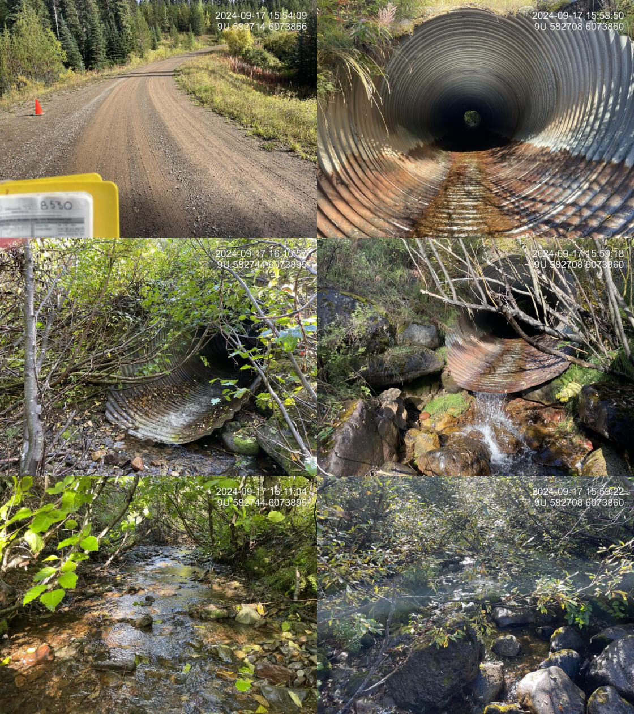 |
| Location and Stream Data |
|
Crossing Characteristics | – |
|---|---|---|---|
| Date | 2024-09-18 | Crossing Sub Type | Bridge |
| PSCIS ID | 58235 | Diameter (m) | 12 |
| External ID | – | Length (m) | 10 |
| Crew | AI | Embedded | – |
| UTM Zone | 9 | Depth Embedded (m) | – |
| Easting | 616177 | Resemble Channel | – |
| Northing | 6074155 | Backwatered | – |
| Stream | Kathlyn Creek | Percent Backwatered | – |
| Road | Highway 16 | Fill Depth (m) | – |
| Road Tenure | MoTi | Outlet Drop (m) | – |
| Channel Width (m) | – | Outlet Pool Depth (m) | – |
| Stream Slope (%) | – | Inlet Drop | – |
| Beaver Activity | No | Slope (%) | – |
| Habitat Value | – | Valley Fill | – |
| Final score | 0 | Barrier Result | Passable |
| Fix type | – | Fix Span / Diameter | – |
| Comments: New, well built, bridge. | |||
| Photos: PSCIS ID 58235. From top left clockwise: Road/Site Card, Barrel, Outlet, Downstream, Upstream, Inlet. | |||
| 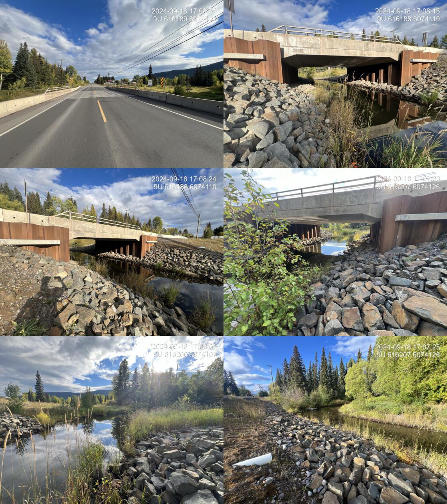 |
| Location and Stream Data |
|
Crossing Characteristics | – |
|---|---|---|---|
| Date | 2024-09-19 | Crossing Sub Type | Round Culvert |
| PSCIS ID | 195934 | Diameter (m) | 1.2 |
| External ID | – | Length (m) | 16 |
| Crew | LS VJ | Embedded | No |
| UTM Zone | 9 | Depth Embedded (m) | – |
| Easting | 645128 | Resemble Channel | – |
| Northing | 6034597 | Backwatered | Yes |
| Stream | Dunalter Creek | Percent Backwatered | 15 |
| Road | Barret station rd | Fill Depth (m) | 2 |
| Road Tenure | MoTi | Outlet Drop (m) | 0 |
| Channel Width (m) | 1.6 | Outlet Pool Depth (m) | 0.15 |
| Stream Slope (%) | 1 | Inlet Drop | No |
| Beaver Activity | No | Slope (%) | 4 |
| Habitat Value | Medium | Valley Fill | Deep Fill |
| Final score | 29 | Barrier Result | Barrier |
| Fix type | Replace Structure with Streambed Simulation CBS | Fix Span / Diameter | 3 |
| Comments: The inlet of the culvert is approximately 3 m downstream of the outlet of culvert 195935, which crosses under the Houston Airport Rd. The stream has an estimated slope of 1%. Downstream of the culvert, the stream is heavily overgrown. The culvert has holes in the bottom about 2 m from the outlet and is backwatered up to that point. MoTi chris_culvert_id: 1755233 | |||
| Photos: PSCIS ID 195934. From top left clockwise: Road/Site Card, Barrel, Outlet, Downstream, Upstream, Inlet. | |||
| 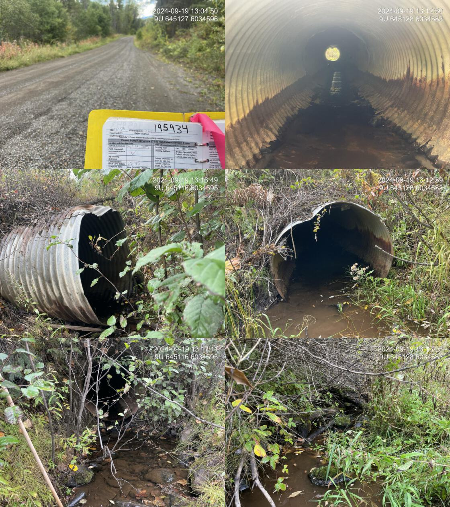 |
| Location and Stream Data |
|
Crossing Characteristics | – |
|---|---|---|---|
| Date | 2024-09-19 | Crossing Sub Type | Round Culvert |
| PSCIS ID | 195935 | Diameter (m) | 1.2 |
| External ID | – | Length (m) | 38 |
| Crew | LS VJ | Embedded | No |
| UTM Zone | 9 | Depth Embedded (m) | – |
| Easting | 645104 | Resemble Channel | – |
| Northing | 6034615 | Backwatered | No |
| Stream | Dunalter Creek | Percent Backwatered | – |
| Road | Houston Airport rd | Fill Depth (m) | 9.9 |
| Road Tenure | MoTi | Outlet Drop (m) | 0.2 |
| Channel Width (m) | 1.7 | Outlet Pool Depth (m) | 0.15 |
| Stream Slope (%) | 2 | Inlet Drop | No |
| Beaver Activity | No | Slope (%) | 1 |
| Habitat Value | Medium | Valley Fill | Deep Fill |
| Final score | 32 | Barrier Result | Barrier |
| Fix type | Replace Structure with Streambed Simulation CBS | Fix Span / Diameter | 35.5 |
| Comments: Upstream of the crossing, there is good habitat for fish, including undercut banks, functional large woody debris, healthy riparian vegetation, and several pools suitable for overwintering fish. A fish ~100 mm in length was observed in one of the pools upstream. A barbed wire fence is present when accessing the inlet. The culvert is extremely long (38 m), with its outlet located approximately 3 m upstream of the inlet of crossing 195934. Downstream of crossing 195934 the stream is heavily overgrown.Fill depth 11 m but changed to 9.9 m to meet submission requirements. MoTi chris_culvert_id: 2078335 | |||
| Photos: PSCIS ID 195935. From top left clockwise: Road/Site Card, Barrel, Outlet, Downstream, Upstream, Inlet. | |||
| 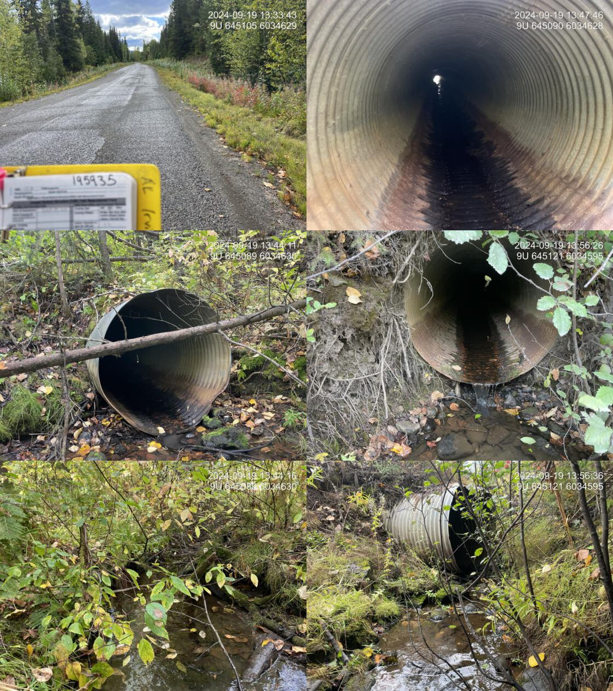 |
| Location and Stream Data |
|
Crossing Characteristics | – |
|---|---|---|---|
| Date | 2024-09-19 | Crossing Sub Type | Oval Culvert |
| PSCIS ID | 195943 | Diameter (m) | 2.2 |
| External ID | – | Length (m) | 14 |
| Crew | LS | Embedded | No |
| UTM Zone | 9 | Depth Embedded (m) | – |
| Easting | 645439 | Resemble Channel | – |
| Northing | 6035050 | Backwatered | No |
| Stream | Stock Creek | Percent Backwatered | – |
| Road | Barrett station rd | Fill Depth (m) | 0.4 |
| Road Tenure | MoTi | Outlet Drop (m) | 1.05 |
| Channel Width (m) | 2.6 | Outlet Pool Depth (m) | 0.6 |
| Stream Slope (%) | 2 | Inlet Drop | No |
| Beaver Activity | No | Slope (%) | 1.5 |
| Habitat Value | Medium | Valley Fill | Deep Fill |
| Final score | 28 | Barrier Result | Barrier |
| Fix type | Replace with New Open Bottom Structure | Fix Span / Diameter | 15 |
| Comments: The culvert has a substantial outlet drop of 1.05 m, with signs of high flows at the outlet. The stream likely contains numerous pools during higher flows but had very low flows at the time of assessment. Flowing through agricultural land on both sides, the stream is heavily eroded downstream, making it a strong candidate for fencing and riparian management. Upstream habitat was less eroded and consisted of mature riparian vegetation providing good habitat for fish. Only two fish were captured during sampling (both in the deep outlet pool), which was unexpected given the good habitat. Conductivity was extremely high, possibly due to upstream cattle activity and surrounding land use. MoTi chris_culvert_id: 1755230 | |||
| Photos: PSCIS ID 195943. From top left clockwise: Road/Site Card, Barrel, Outlet, Downstream, Upstream, Inlet. | |||
| 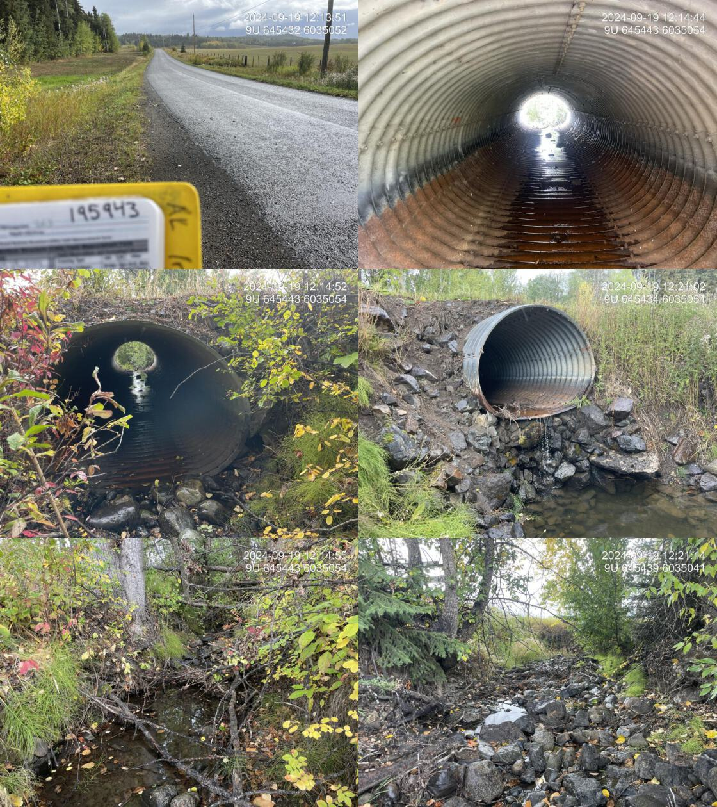 |
| Location and Stream Data |
|
Crossing Characteristics | – |
|---|---|---|---|
| Date | 2024-10-03 | Crossing Sub Type | Round Culvert |
| PSCIS ID | 197967 | Diameter (m) | 5.6 |
| External ID | – | Length (m) | 40 |
| Crew | AI | Embedded | Yes |
| UTM Zone | 9 | Depth Embedded (m) | 2 |
| Easting | 692426 | Resemble Channel | Yes |
| Northing | 6032341 | Backwatered | No |
| Stream | Taman Creek | Percent Backwatered | – |
| Road | Highway 16 | Fill Depth (m) | 7 |
| Road Tenure | MoTi | Outlet Drop (m) | 0 |
| Channel Width (m) | 5.5 | Outlet Pool Depth (m) | 0 |
| Stream Slope (%) | 2 | Inlet Drop | No |
| Beaver Activity | Yes | Slope (%) | 3 |
| Habitat Value | Medium | Valley Fill | Deep Fill |
| Final score | 16 | Barrier Result | Potential |
| Fix type | Replace with New Open Bottom Structure | Fix Span / Diameter | 27 |
|
Comments: This is a brand-new replacement structure, extremely well built with extensive embedment that includes numerous large boulders, cobbles, and gravel. The multiplate round structure is embedded nearly 2 m. Upstream, woody debris and boulder structures are cabled together for added stability. This massive construction project involved a substantial amount of fill extending 60 m downstream and over 200 m upstream. The site now offers migration conditions for fish that are equal to or better than previous conditions. MoTi chris_culvert_id: 2076452 |
|||
| Photos: PSCIS ID 197967. From top left clockwise: Road/Site Card, Barrel, Outlet, Downstream, Upstream, Inlet. | |||
| 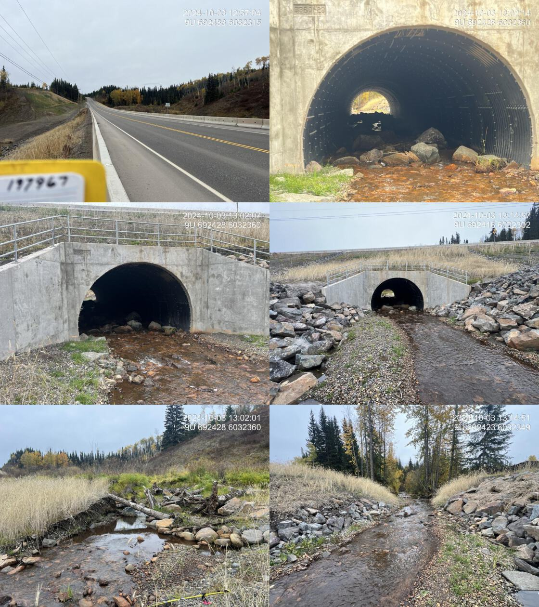 |
| Location and Stream Data |
|
Crossing Characteristics | – |
|---|---|---|---|
| Date | 2024-09-24 | Crossing Sub Type | Bridge |
| PSCIS ID | 198217 | Diameter (m) | 14 |
| External ID | – | Length (m) | 4 |
| Crew | LS AI | Embedded | – |
| UTM Zone | 9 | Depth Embedded (m) | – |
| Easting | 582850 | Resemble Channel | – |
| Northing | 6130490 | Backwatered | – |
| Stream | Sik-e-dakh | Percent Backwatered | – |
| Road | Sik-e-dakh Water Tower Rd | Fill Depth (m) | – |
| Road Tenure | MoTi | Outlet Drop (m) | – |
| Channel Width (m) | – | Outlet Pool Depth (m) | – |
| Stream Slope (%) | – | Inlet Drop | – |
| Beaver Activity | No | Slope (%) | – |
| Habitat Value | – | Valley Fill | – |
| Final score | 0 | Barrier Result | Passable |
| Fix type | – | Fix Span / Diameter | – |
| Comments: The culvert was replaced with a bridge, featuring excellent construction with a wide channel beneath the structure. Riprap has been covered with soil to promote vegetation growth, and significant riparian restoration is underway with trees and shrubs being planted. Overall, this is a well-executed replacement project. | |||
| Photos: PSCIS ID 198217. From top left clockwise: Road/Site Card, Barrel, Outlet, Downstream, Upstream, Inlet. | |||
| 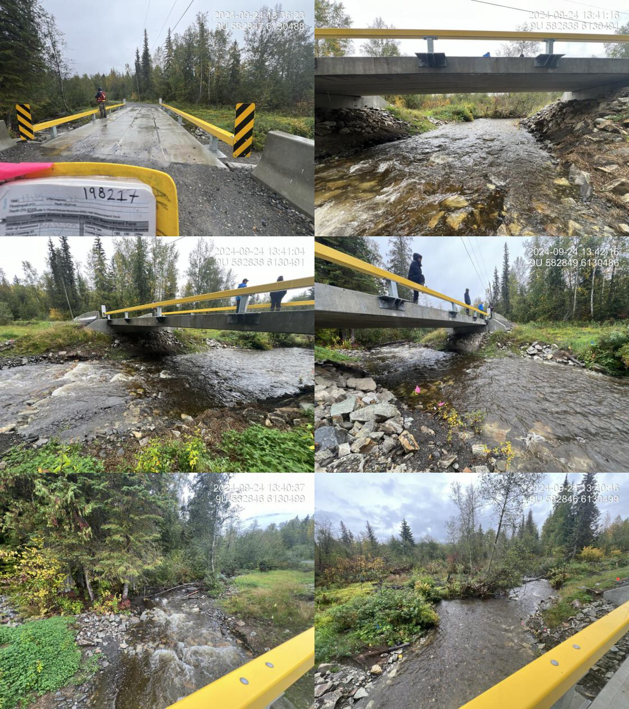 |
| Location and Stream Data |
|
Crossing Characteristics | – |
|---|---|---|---|
| Date | 2024-09-20 | Crossing Sub Type | Round Culvert |
| PSCIS ID | 203122 | Diameter (m) | 3 |
| External ID | 1805555 | Length (m) | 25 |
| Crew | AI | Embedded | No |
| UTM Zone | 9 | Depth Embedded (m) | – |
| Easting | 614941 | Resemble Channel | Yes |
| Northing | 6075232 | Backwatered | No |
| Stream | Simpson Creek | Percent Backwatered | – |
| Road | Railway | Fill Depth (m) | 1 |
| Road Tenure | CN Rail | Outlet Drop (m) | 0.05 |
| Channel Width (m) | 5 | Outlet Pool Depth (m) | 0.9 |
| Stream Slope (%) | 1 | Inlet Drop | Yes |
| Beaver Activity | Yes | Slope (%) | 2 |
| Habitat Value | High | Valley Fill | Deep Fill |
| Final score | 24 | Barrier Result | Barrier |
| Fix type | Replace with New Open Bottom Structure | Fix Span / Diameter | 15 |
| Comments: Although this culvert is on Simpson Creek, it is not currently conveying the main flow and remains mostly dry. Two 1.5 m diameter pipes run under the railway, approximately 30 m apart. The southern pipe is fully embedded with an average embedment depth of 25 cm, while the northern pipe is currently passing all stream flow. This is a high-value stream with extensive gravel areas suitable for steelhead, coho, and chinook salmon spawning upstream. The adjacent landowner has reported recent observations of steelhead spawning and has historical knowledge of chinook spawning approximately 300 m downstream from Nielsen Road. | |||
| Photos: PSCIS ID 1805555. From top left clockwise: Road/Site Card, Barrel, Outlet, Downstream, Upstream, Inlet. | |||
| 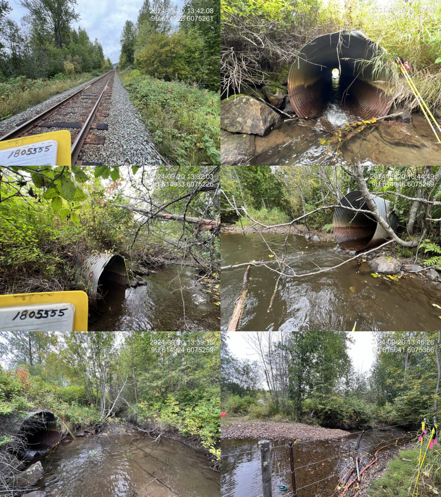 |
| Location and Stream Data |
|
Crossing Characteristics | – |
|---|---|---|---|
| Date | 2024-09-25 | Crossing Sub Type | Round Culvert |
| PSCIS ID | 203123 | Diameter (m) | 0.6 |
| External ID | 8300088 | Length (m) | 16 |
| Crew | AI JO | Embedded | No |
| UTM Zone | 9 | Depth Embedded (m) | – |
| Easting | 581685 | Resemble Channel | – |
| Northing | 6114465 | Backwatered | No |
| Stream | Tributary to Gershwin Creek | Percent Backwatered | – |
| Road | Cormeau Road | Fill Depth (m) | 0.4 |
| Road Tenure | MoTi | Outlet Drop (m) | 0 |
| Channel Width (m) | 0.5 | Outlet Pool Depth (m) | 0 |
| Stream Slope (%) | 1.5 | Inlet Drop | No |
| Beaver Activity | No | Slope (%) | 1 |
| Habitat Value | Low | Valley Fill | Deep Fill |
| Final score | 18 | Barrier Result | Potential |
| Fix type | Replace Structure with Streambed Simulation CBS | Fix Span / Diameter | 3 |
| Comments: No visible channel was observed; the area appeared to be a wet draw during the survey, with some sedges present upstream. It is unlikely to provide fish habitat. MoTi chris_culvert_id: 1524657 | |||
| Photos: PSCIS ID 8300088. From top left clockwise: Road/Site Card, Barrel, Outlet, Downstream, Upstream, Inlet. | |||
| 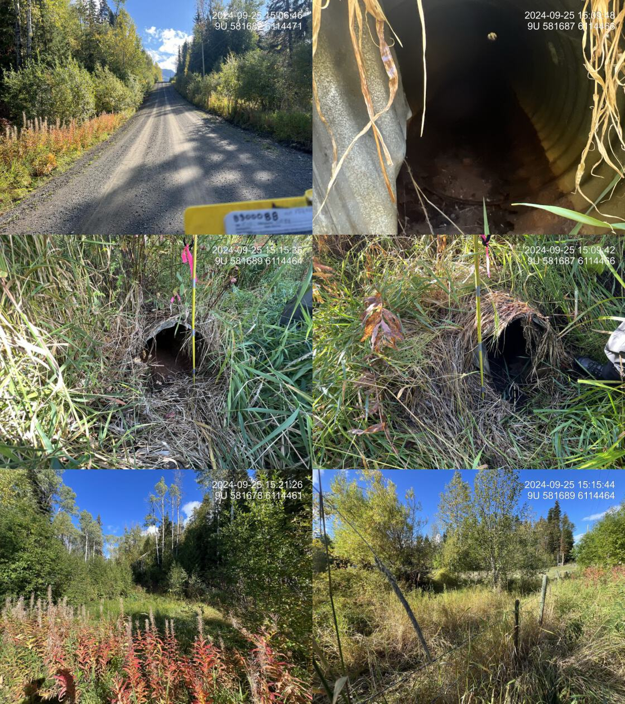 |
| Location and Stream Data |
|
Crossing Characteristics | – |
|---|---|---|---|
| Date | 2024-09-25 | Crossing Sub Type | Round Culvert |
| PSCIS ID | 203124 | Diameter (m) | 0.6 |
| External ID | 8300015 | Length (m) | 14 |
| Crew | AI JO | Embedded | No |
| UTM Zone | 9 | Depth Embedded (m) | – |
| Easting | 581852 | Resemble Channel | – |
| Northing | 6115965 | Backwatered | No |
| Stream | Tributary to Gershwin Creek | Percent Backwatered | – |
| Road | Comeau Road | Fill Depth (m) | 0.5 |
| Road Tenure | MoTi | Outlet Drop (m) | 0 |
| Channel Width (m) | 0.95 | Outlet Pool Depth (m) | 0 |
| Stream Slope (%) | 1 | Inlet Drop | Yes |
| Beaver Activity | No | Slope (%) | 3 |
| Habitat Value | Medium | Valley Fill | Deep Fill |
| Final score | 26 | Barrier Result | Barrier |
| Fix type | Replace Structure with Streambed Simulation CBS | Fix Span / Diameter | 3 |
|
Comments: This is a newer PVC pipe with a beaver grate on the inlet. Debris clogging about 20 cm of the inlet has caused water to back up upstream of the crossing. Downstream, the drainage is very small, with a fence located approximately 10 m away. Cutthroat trout and Dolly Varden are known to inhabit the lake upstream. MoTi chris_culvert_id: 1524661 |
|||
| Photos: PSCIS ID 8300015. From top left clockwise: Road/Site Card, Barrel, Outlet, Downstream, Upstream, Inlet. | |||
| 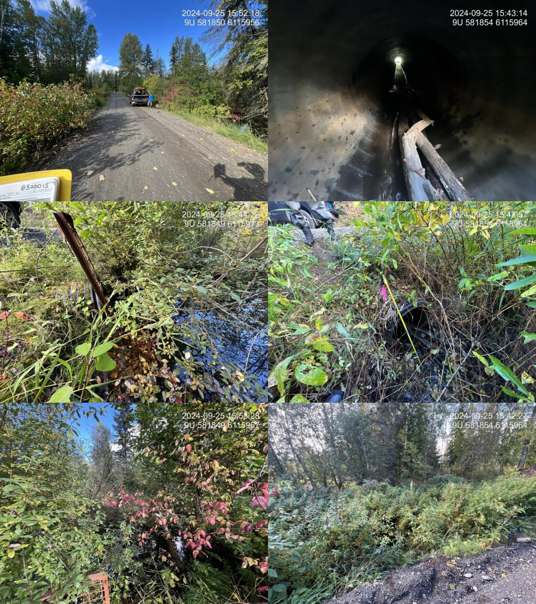 |
| Location and Stream Data |
|
Crossing Characteristics | – |
|---|---|---|---|
| Date | 2024-09-25 | Crossing Sub Type | Round Culvert |
| PSCIS ID | 203125 | Diameter (m) | 1.37 |
| External ID | 2024092550 | Length (m) | 6 |
| Crew | LS JD | Embedded | No |
| UTM Zone | 9 | Depth Embedded (m) | – |
| Easting | 581313 | Resemble Channel | – |
| Northing | 6115473 | Backwatered | No |
| Stream | Gershwin Creek | Percent Backwatered | – |
| Road | Private property | Fill Depth (m) | 0.5 |
| Road Tenure | Private | Outlet Drop (m) | 0 |
| Channel Width (m) | 6 | Outlet Pool Depth (m) | 0.3 |
| Stream Slope (%) | 5 | Inlet Drop | Yes |
| Beaver Activity | No | Slope (%) | 2 |
| Habitat Value | High | Valley Fill | Deep Fill |
| Final score | 21 | Barrier Result | Barrier |
| Fix type | Replace with New Open Bottom Structure | Fix Span / Diameter | 15 |
| Comments: The landowner has constructed a bridge over the stream with two culverts, measuring 0.47 m and 0.9 m in diameter. Some flow passes through the culverts while some bypasses them, though it is unclear if fish can navigate the bypassing flow. The bridge appears to provide access to adjacent agricultural fields. High-quality habitat with numerous pools and abundant gravel is present, but strong currents in the culverts due to significant flow likely inhibit fish passage. | |||
| Photos: PSCIS ID 2024092550. From top left clockwise: Road/Site Card, Barrel, Outlet, Downstream, Upstream, Inlet. | |||
| 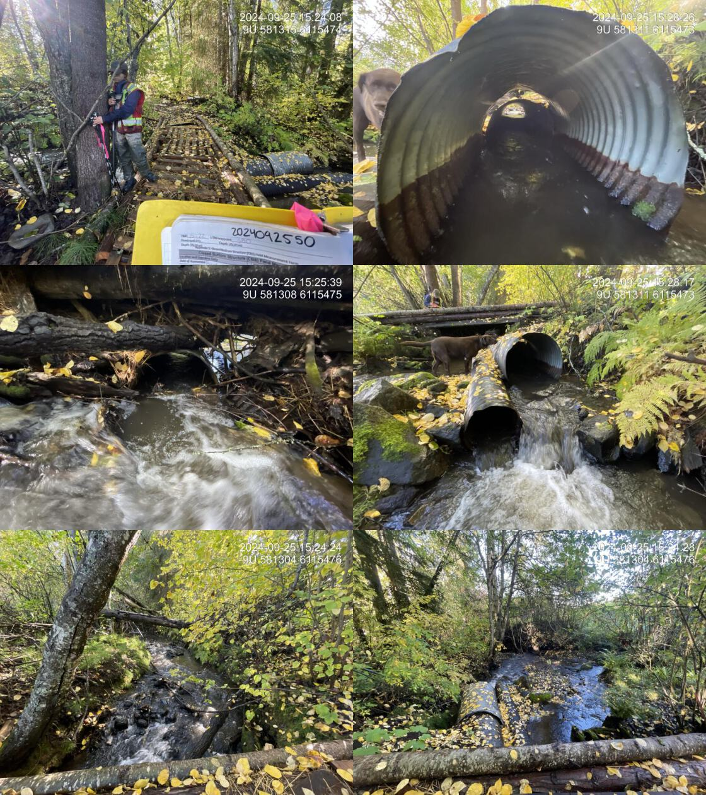 |
| Location and Stream Data |
|
Crossing Characteristics | – |
|---|---|---|---|
| Date | 2024-09-20 | Crossing Sub Type | Round Culvert |
| PSCIS ID | 203126 | Diameter (m) | 2.85 |
| External ID | 2024092003 | Length (m) | 7 |
| Crew | AI | Embedded | Yes |
| UTM Zone | 9 | Depth Embedded (m) | 0.2 |
| Easting | 615326 | Resemble Channel | Yes |
| Northing | 6075142 | Backwatered | No |
| Stream | Simpson Creek | Percent Backwatered | – |
| Road | Private driveway | Fill Depth (m) | 1 |
| Road Tenure | Private | Outlet Drop (m) | 0 |
| Channel Width (m) | 7 | Outlet Pool Depth (m) | 0.3 |
| Stream Slope (%) | 1.5 | Inlet Drop | Yes |
| Beaver Activity | Yes | Slope (%) | 3 |
| Habitat Value | High | Valley Fill | Deep Fill |
| Final score | 21 | Barrier Result | Barrier |
| Fix type | Replace with New Open Bottom Structure | Fix Span / Diameter | 15 |
|
Comments: Three 0.95 m pipes run under a private driveway. The pipe lengths and gradients are estimated, with two pipes appearing fully embedded and one slightly elevated by approximately 30 cm. The stream is channelized with large boulders throughout the property. Beaver activity is evident, with debris at the inlet and three dams ranging from 0.4 to 1 m high within 150 m upstream. The landowner reported previous blockages caused by beavers, requiring the inlet to be cleared and significant amounts of accumulated material to be dredged out. |
|||
| Photos: PSCIS ID 2024092003. From top left clockwise: Road/Site Card, Barrel, Outlet, Downstream, Upstream, Inlet. | |||
| 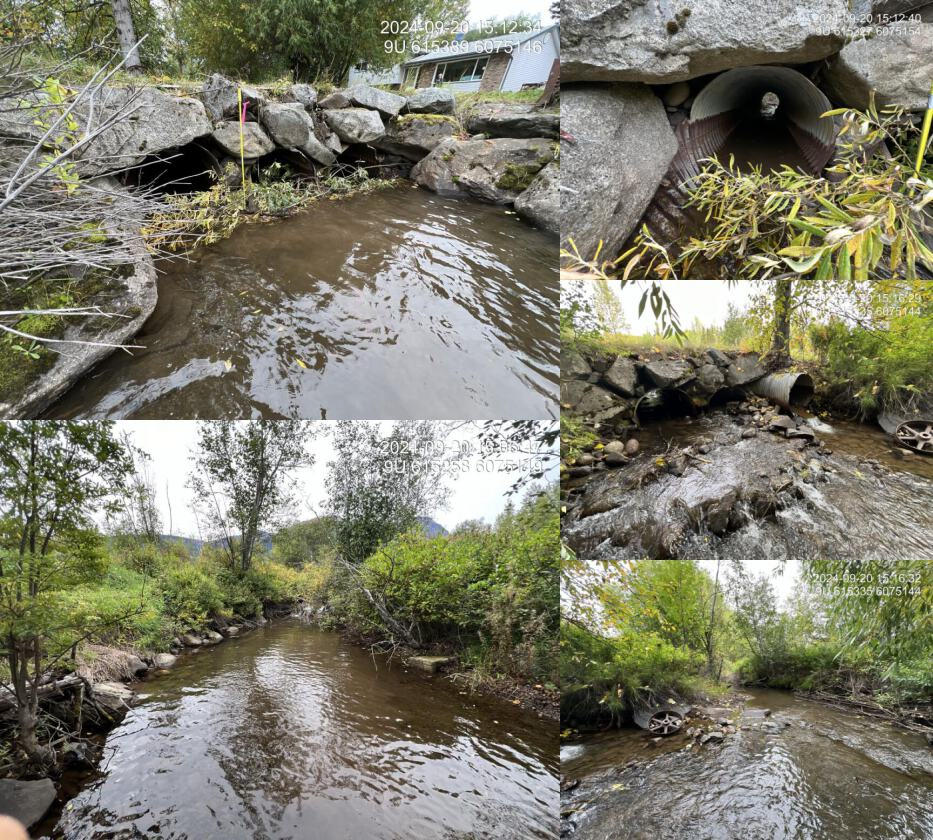 |
| Location and Stream Data |
|
Crossing Characteristics | – |
|---|---|---|---|
| Date | 2024-09-20 | Crossing Sub Type | Bridge |
| PSCIS ID | 203127 | Diameter (m) | 12 |
| External ID | 2024092001 | Length (m) | 4 |
| Crew | AI | Embedded | – |
| UTM Zone | 9 | Depth Embedded (m) | – |
| Easting | 614346 | Resemble Channel | – |
| Northing | 6075065 | Backwatered | – |
| Stream | Simpson Creek | Percent Backwatered | – |
| Road | Private driveway | Fill Depth (m) | – |
| Road Tenure | Private | Outlet Drop (m) | – |
| Channel Width (m) | – | Outlet Pool Depth (m) | – |
| Stream Slope (%) | – | Inlet Drop | – |
| Beaver Activity | No | Slope (%) | – |
| Habitat Value | – | Valley Fill | – |
| Final score | 0 | Barrier Result | Passable |
| Fix type | – | Fix Span / Diameter | – |
| Comments: Steel bridge, potentially for pedestrian or ATV use only, located on a private road on private land. | |||
| Photos: PSCIS ID 2024092001. From top left clockwise: Road/Site Card, Barrel, Outlet, Downstream, Upstream, Inlet. | |||
| 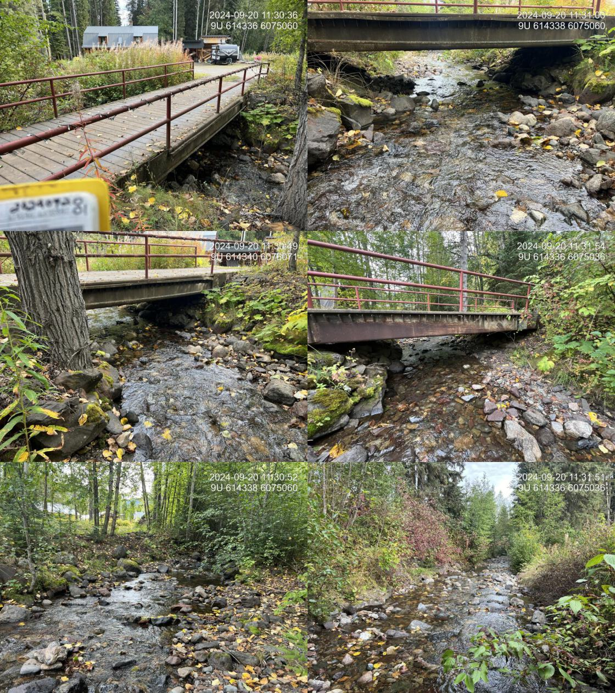 |
| Location and Stream Data |
|
Crossing Characteristics | – |
|---|---|---|---|
| Date | 2024-09-20 | Crossing Sub Type | Bridge |
| PSCIS ID | 203128 | Diameter (m) | 7.4 |
| External ID | 2024092002 | Length (m) | 1 |
| Crew | AI | Embedded | – |
| UTM Zone | 9 | Depth Embedded (m) | – |
| Easting | 614775 | Resemble Channel | – |
| Northing | 6075153 | Backwatered | – |
| Stream | Simpson Creek | Percent Backwatered | – |
| Road | Whalen Road | Fill Depth (m) | – |
| Road Tenure | MoTi | Outlet Drop (m) | – |
| Channel Width (m) | – | Outlet Pool Depth (m) | – |
| Stream Slope (%) | – | Inlet Drop | – |
| Beaver Activity | No | Slope (%) | – |
| Habitat Value | – | Valley Fill | – |
| Final score | 0 | Barrier Result | Passable |
| Fix type | – | Fix Span / Diameter | – |
| Comments: Small wooden foot bridge linking private property on Whalen Road right of way. | |||
| Photos: PSCIS ID 2024092002. From top left clockwise: Road/Site Card, Barrel, Outlet, Downstream, Upstream, Inlet. | |||
| 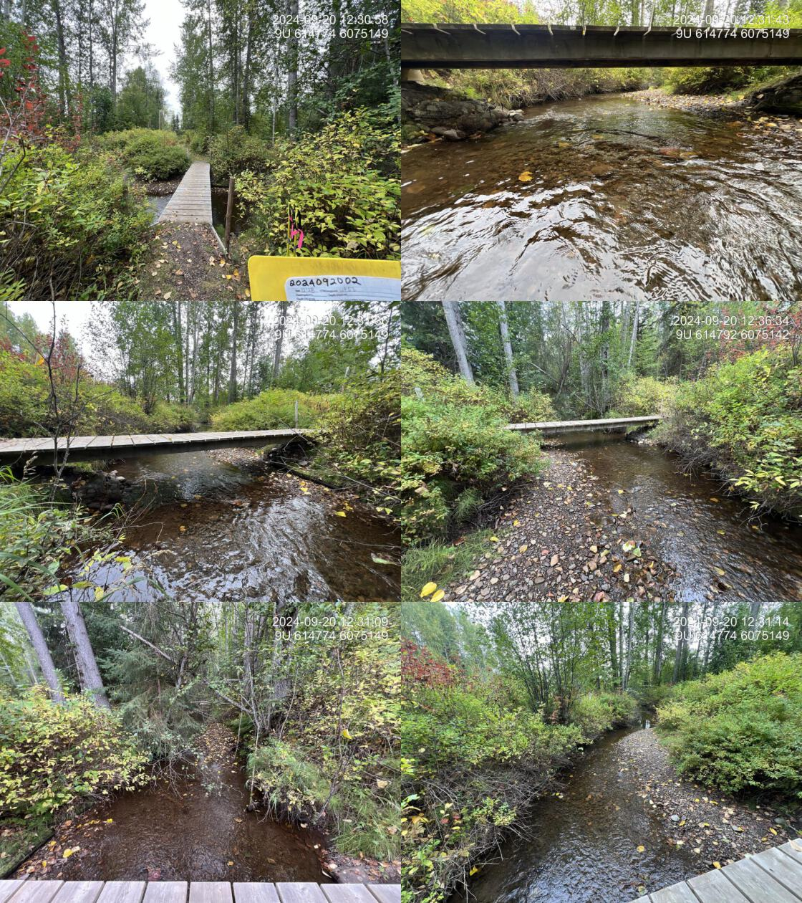 |
| Location and Stream Data |
|
Crossing Characteristics | – |
|---|---|---|---|
| Date | 2024-09-25 | Crossing Sub Type | Bridge |
| PSCIS ID | 203129 | Diameter (m) | 13 |
| External ID | 2024092501 | Length (m) | 2 |
| Crew | AI JO | Embedded | – |
| UTM Zone | 9 | Depth Embedded (m) | – |
| Easting | 581028 | Resemble Channel | – |
| Northing | 6115707 | Backwatered | – |
| Stream | Gershwin Creek | Percent Backwatered | – |
| Road | Private | Fill Depth (m) | – |
| Road Tenure | Private | Outlet Drop (m) | – |
| Channel Width (m) | – | Outlet Pool Depth (m) | – |
| Stream Slope (%) | – | Inlet Drop | – |
| Beaver Activity | No | Slope (%) | – |
| Habitat Value | – | Valley Fill | – |
| Final score | 0 | Barrier Result | Passable |
| Fix type | – | Fix Span / Diameter | – |
|
Comments: Steel structure suitable for foot traffic or ATV use, located on private land. |
|||
| Photos: PSCIS ID 2024092501. From top left clockwise: Road/Site Card, Barrel, Outlet, Downstream, Upstream, Inlet. | |||
| 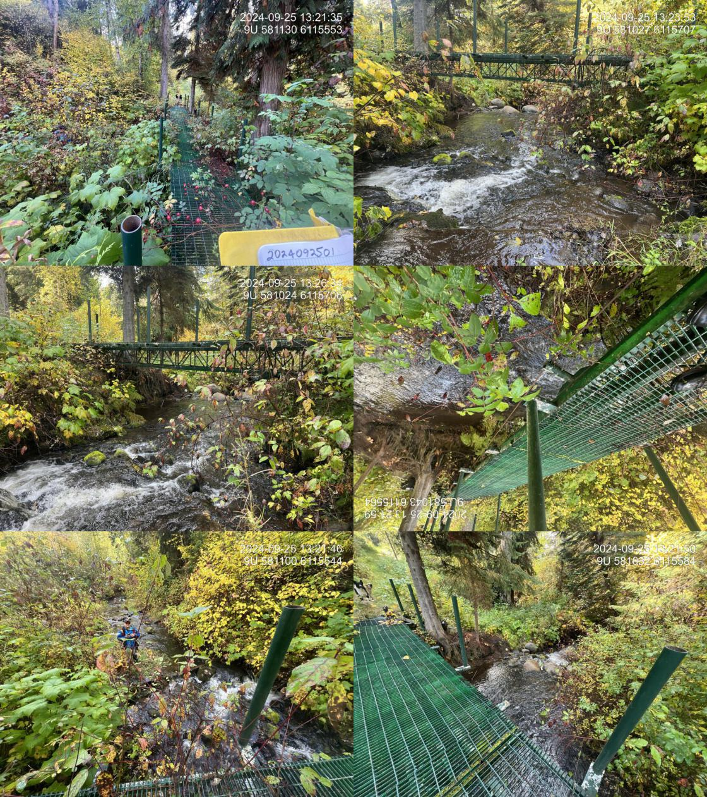 |
| Location and Stream Data |
|
Crossing Characteristics | – |
|---|---|---|---|
| Date | 2024-09-27 | Crossing Sub Type | Ford |
| PSCIS ID | 203130 | Diameter (m) | 9 |
| External ID | 2024092751 | Length (m) | 3 |
| Crew | LS AI | Embedded | – |
| UTM Zone | 9 | Depth Embedded (m) | – |
| Easting | 613951 | Resemble Channel | – |
| Northing | 6074629 | Backwatered | – |
| Stream | Simpson Creek | Percent Backwatered | – |
| Road | Transmission line road | Fill Depth (m) | – |
| Road Tenure | – | Outlet Drop (m) | – |
| Channel Width (m) | – | Outlet Pool Depth (m) | – |
| Stream Slope (%) | – | Inlet Drop | – |
| Beaver Activity | No | Slope (%) | – |
| Habitat Value | – | Valley Fill | – |
| Final score | 0 | Barrier Result | Passable |
| Fix type | – | Fix Span / Diameter | – |
| Comments: Ford across transmission line road which parallels the transmission lines. Fully passable. | |||
| Photos: PSCIS ID 2024092751. From top left clockwise: Road/Site Card, Barrel, Outlet, Downstream, Upstream, Inlet. | |||
| 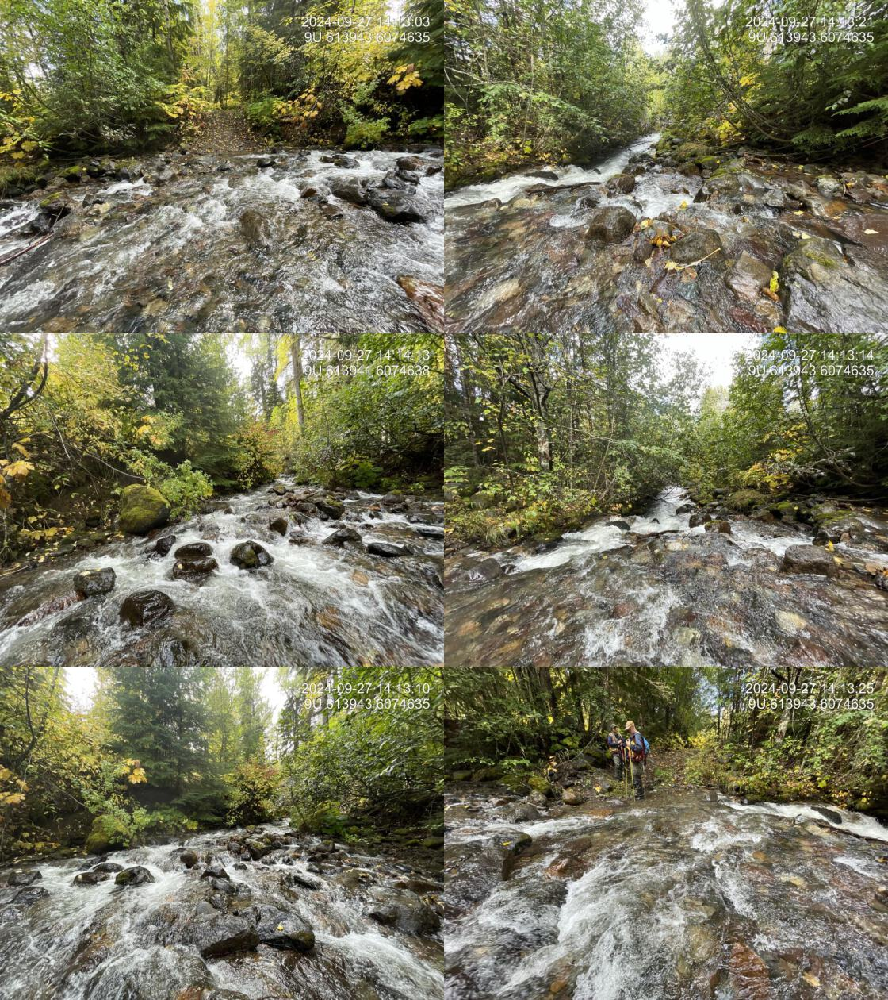 |